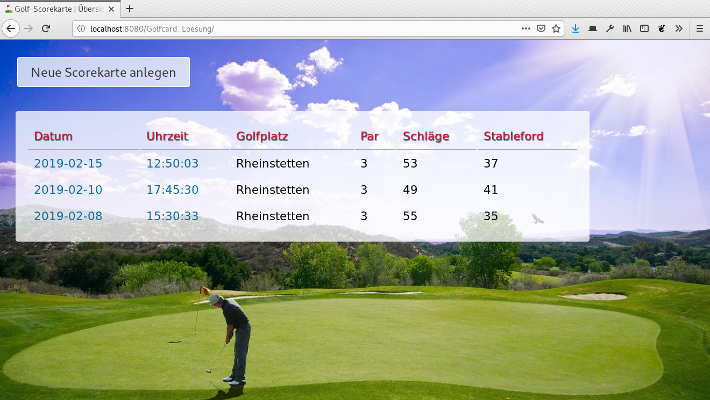
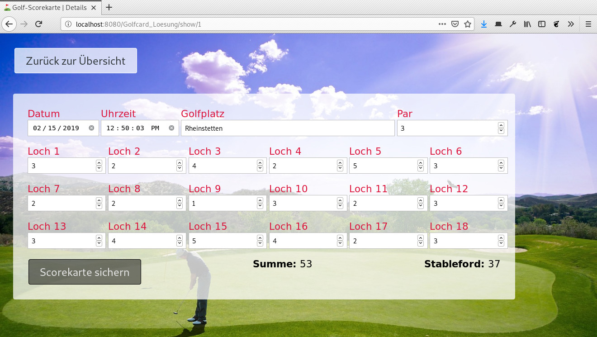

Ein schottisches Sprichwort besagt „Beim Golf geht es nicht um Leben und Tod - es geht um mehr.”. ☠️ Genauer gesagt geht es um die Anzahl Schläge, die man braucht, um einen Golfball während eines Spiels in 18 verschiedene Löcher einzulochen. 🏌️ Deshalb benötigt jede*r Golfspieler*in eine Scorekarte 💯, in welche die Anzahl eingetragen werden kann. Klassischerweise macht man das auf vorgedrucktem Papier. Eine moderne Onlineversion, die man einfach auf dem Smartphone ausfüllen könnte, wäre aber sicher auch nicht schlecht. Die folgenden Screenshots zeigen, wie so eine Anwendung aussehen könnte:
|  |  |
Wie du siehst, ist eine Scorekarte nicht sehr kompliziert aufgebaut. Es gibt ein Datum, eine Uhrzeit sowie den Namen des Goflplatzes, auf dem man spielt. Zusätzlich gibt es den Wert „Par”, der angibt, wie viele Schläge ein geübter Spieler auf diesem Platz maximal je Loch brauchen würde. Und dann gibt es je Loch die tatsächlich benötigte Anzahl Schläge. Diese lässt sich aufsummieren und nach der Stableford-Methode in eine Punktzahl umrechnen.
Die anzupassenden Stellen sind mit „TODO” und einer kurzen Erklärung gekennzeichnet. Das Grundgerüst der Anwendung steht bereits. Ebenso das Datenmodell und eine dazu passende Enterprise Java Bean. Alle anderen Sachen musst du allerdings selbst ausprogrammieren. Diesmal ist relativ wenig vorgegeben. 🤨
Die Stableford-Bewertung eines Spiels lässt sich ganz einfach ausrechnen. Du musst einfach in einer Schleife über alle Löcher gehen, bei denen mindestens ein Abschlag eingetragen wurde (Anzahl Schläge größer Null). Dann vergleichst du die eingetragene Zahl mit dem Par-Wert des Golfplatzes. Je nachdem, wie weit der eingetragene Wert unter oder über dem Par liegt, werden unterschiedlich viele Punkte gutgeschrieben:
| Anzahl Schläge eines Lochs | Zu wertende Stableford-Punkte |
|---|---|
| Drei unter Par | 5 |
| Zwei unter Par | 4 |
| Eins unter Par | 3 |
| Genau Par | 2 |
| Eins über Par | 1 |
| Zwei über Par oder schlechter | 0 |
Vergleiche deine Lösung mit der Musterlösung sowie ein paar Kommilitonen. Wer schafft es, die Anwendung mit den wenigsten Zeilen Code (ohne Leerzeilen und Kommentare) aber dennoch fehlerfrei zu realisieren? 💻